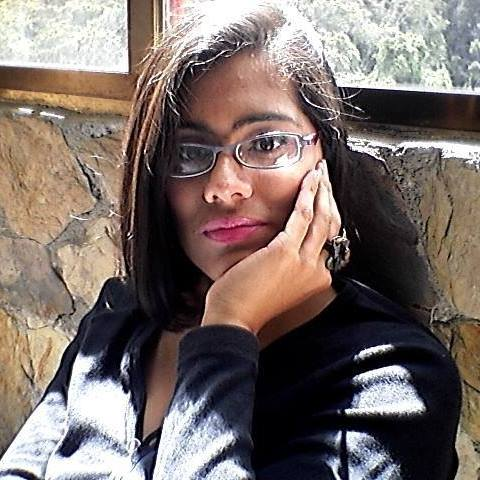

Cristal Samira Gaviria Rodriguez |
 | |||||
|---|---|---|---|---|---|---|
Datos Personales |
Cedula de Identidad: Nacionalidad: Venezolana Estado Civil: Soltera Edad: 31 años Direccion:San Antonio de Los Altos. Estado Miranda - Venezuela. Correo: cristal.61@gmail.com Telefonos: |
IdiomasIngles BasicoEspañol Nativo |
||||
Estudios Academicos |
2005 - Actualmente Tesista de la Escuela de Filosofia en la Universidad Central de Venezuela (UCV)2009 - Actualmente Estudiante de 2do Semestre de Educacion en la Universidad Central de Venezuela (UCV)2004 - Bachiller en Ciencias en la Unidad Educativa Boris Bossio Vivas | |||||
Experiencia laboral |
Grupo Arka Consultores | |||||